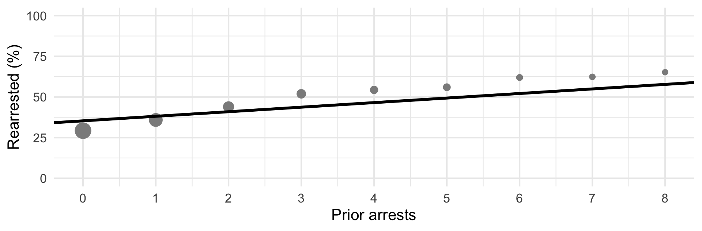
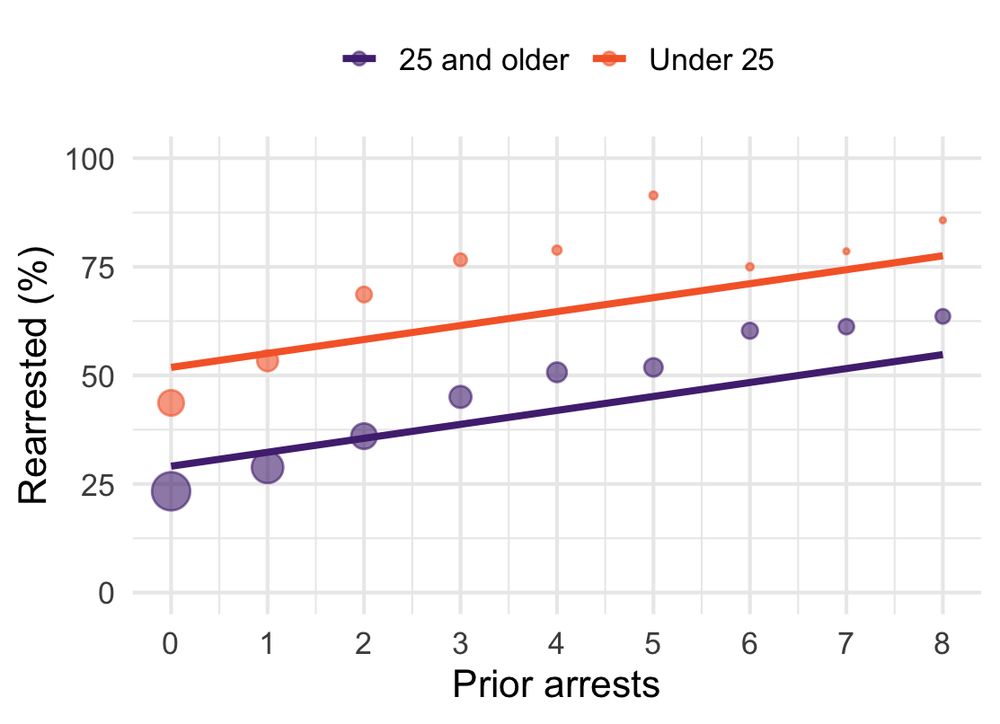
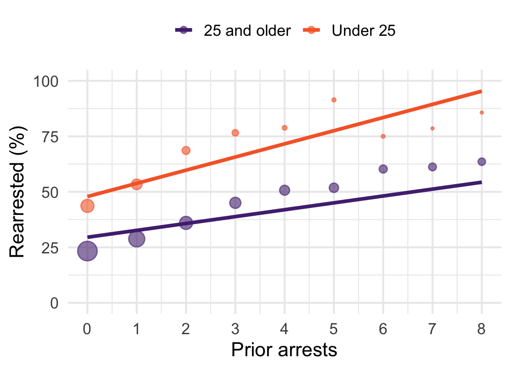
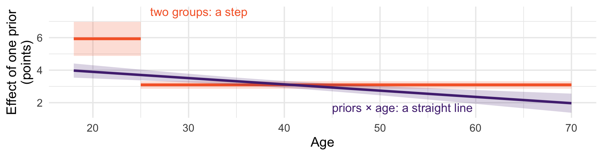
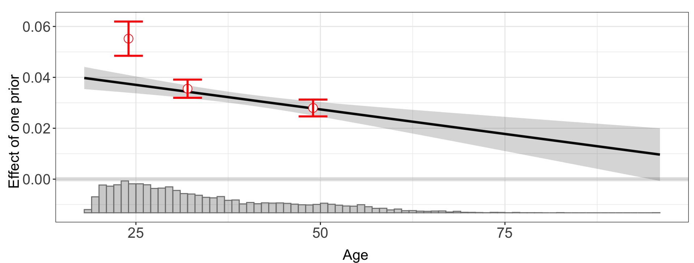

Last time moved fast. Let’s do another example
Does a prior record predict rearrest more strongly for younger defendants?
Outcome \(Y\): rearrested within two years (1) or not (0), so the coefficients are changes in the chance of rearrest
Predictor \(X\): number of prior arrests
Moderator \(Z\): under 25 (young = 1) or 25 and older (young = 0): 1,529 of 7,214 respondents are under 25

Dots are the actual rearrest rates (bigger dot, more defendants). Each prior arrest adds 2.8 points, for everyone.

Plug in each value of young, in points:
25 and older: 29.1 + 3.2 × priors
Under 25: (29.1 + 22.8) + 3.2 × priors
Two parallel lines. Adding young moves the line up, but the model forces the slope to be the same in both groups.
Fit a separate line to each group and let the data decide:

Under 25: each prior adds 5.9 points
25 and older: each prior adds 3.1 points
The young line is steeper. The effect of priors depends on the age group
That is all an interaction is
\[Y = \beta_0 + \beta_1\,\text{priors} + \beta_2\,\text{young} + \beta_3\,(\text{priors} \times \text{young}) + \varepsilon\]
Plug in each value of young:
\[ \begin{aligned} \textbf{25 and older } (\text{young} = 0)\text{:}\quad & \beta_0 + \beta_1\,\text{priors} \\ \textbf{Under 25 } (\text{young} = 1)\text{:}\quad & (\beta_0 + \beta_2) + (\beta_1 + \beta_3)\,\text{priors} \end{aligned} \]
\(\beta_2\) is how much higher the young line starts (at zero priors)
\(\beta_3\) is how much steeper it is
| Term | Estimate (points) | What it means |
|---|---|---|
(Intercept) |
29.6 | Chance of rearrest for a 25-and-older defendant with no priors |
priors |
3.1 | Effect of one prior for 25 and older (young = 0) |
young |
18.3 | Gap between the groups at zero priors |
priors:young |
2.8 | How much more each prior adds for under-25s |
Every row except the final interaction row describes a situation where some variable equals zero. The interaction is the only term that is about both groups.
From the coefficients:
25 and older: 29.6 + 3.1 × priors
Under 25: (29.6 + 18.3) + (3.1 + 2.8) × priors = 47.9 + 5.9 × priors
Now fit the two groups separately:
The same two lines. With a binary moderator, the interaction model is the same as two separate regressions.
young = 18.3. Is that “the effect of being under 25”?
priors Estimate Std. Error z Pr(>|z|) S 2.5 % 97.5 %
0 0.183 0.0171 10.7 <0.001 86.7 0.150 0.217
2 0.240 0.0139 17.3 <0.001 219.2 0.213 0.267
5 0.325 0.0223 14.6 <0.001 157.9 0.281 0.369
Term: young
Type: response
Comparison: 1 - 0The gap is 18.3 points with no priors, 24.0 with two, 32.5 with five.
The interaction runs both ways: the age gap depends on priors, just as the effect of priors depends on age. Always ask: at what value of the other variable?
priors:young = 2.8 points, robust SE 0.55, \(t\) = 5.2. Equal slopes would almost never produce a gap this large
The under-25 slope, 5.9, is a sum of two estimates. Its standard error needs their covariance, the off-diagonal of vcov(). Let the software do it for you:
In points: 3.1 (95% CI 2.9 to 3.3) for 25 and older, 5.9 (4.9 to 7.0) for under 25. The young slope is about twice as steep.
“Under 25” is a simplification. Last time we used age itself, so the slope of priors is \(\beta_1 + \beta_3 \times \text{age}\): a different line for every age.

Each model imposes a shape: the step cannot change within a group, and the line must be straight. They disagree most for the youngest: at 21 the line says 3.9 points, the two-group model 5.9
The binning check suggests the linear interaction model under-estimates here
Let the data choose the shape. Cut age into thirds, and estimate the effect of priors within each third. If the straight line is right, all three estimates sit on it.
Inside each third, interflex fits the Step 9 model again (priors * age), with age measured from that third’s middle age
So each estimate is the effect of a prior at the middle of its third, using only the defendants in that third

Red: the effect of a prior within each third, with 95% intervals. Black: the straight line from Step 9. Grey bars: how many defendants are at each age. The axis is in proportions (0.04 = 4 points).
| Third of defendants | Middle age | Binning estimate (points) | Straight line (points) |
|---|---|---|---|
| Ages 18 to 27 | 24 | 5.5 | 3.7 |
| Ages 28 to 38 | 32 | 3.6 | 3.4 |
| Ages 39 to 96 | 49 | 2.8 | 2.8 |
The middle and oldest thirds sit on the line. The youngest does not: 5.5 points against 3.7
A Wald test of the line against the bins: \(p\) < 0.001
So the effect of a record falls fast through the twenties, then declines slowly. The two-group cut at 25 picked that up; the straight line smooths it away
A constituent term (priors, young) is an effect when the other variable is zero
The interaction is how much one variable’s slope changes per unit of the other
Get conditional effects and their intervals from slopes() and comparisons()
Plot the effect across values of the moderator that actually occur in your data
With a continuous moderator, check the shape with binning before trusting a straight line